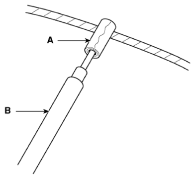
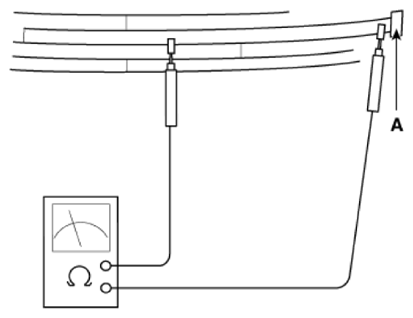

LEMON Manuals
: Even more car manuals for everyone: 1960-2025
Home
>>
Hyundai
>>
2022
>>
Elantra N Line, Standard Trans
>>
Repair and Diagnosis
>>
Accessories & Equipment
>>
Entertainment Systems
>>
Audio System (Except HEV)
>>
Antenna
>>
Repair Procedures
>>
Inspection
>>
Glass Antenna Test
Glass Antenna Test
Wrap aluminum foil (A) around the tip of the tester probe (B) as shown.

Courtesy of HYUNDAI MOTOR AMERICA
Touch one tester probe to the glass antenna terminal (A) and move the other tester probe along the antenna wires to check that continuity exists.

Courtesy of HYUNDAI MOTOR AMERICA